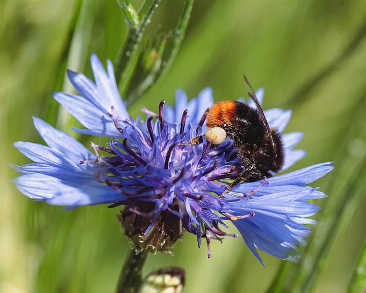
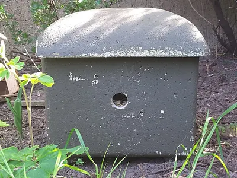
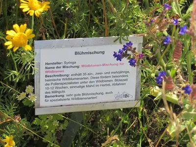
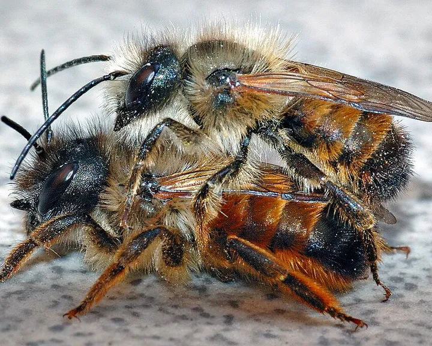
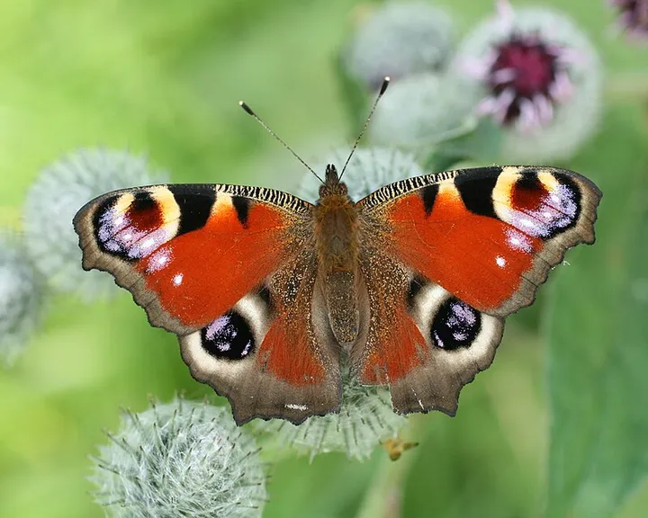

Steinhummel
Bombus lapidarius
Bestäuber1,2–2,2 cmtagaktiv
BlütenHaus & MauerRasen & Boden
Samtschwarze Hummel mit leuchtend rotem Hinterleibsende. Sie nistet gern unter Steinen und in Mauerritzen. Im Juni und Juli ist sie an Klee, Thymian und Lavendel besonders häufig.
So erkennst du die Steinhummel
- Körper samtschwarz
- Hinterleibsende leuchtend rot bis orange
- Männchen mit gelbem Kragen
Auch zu finden unter: Schwarze Hummel
Wann ist die Steinhummel zu sehen?
kaum zu sehenaktivbeste Zeit
Aktiv: März, April, Mai, Juni, Juli, August und September. Hauptzeit: Juni und Juli.
Die Steinhummel ist von März bis September zu sehen. Besonders viel los ist im Juni und Juli. Im Juni und Juli ist sie an Klee, Thymian und Lavendel besonders häufig.
Lebensweise
Was frisst die Steinhummel?
Nektar und Pollen, vor allem von Klee, Thymian, Lavendel, Disteln und Obstblüten.
Nest unter Steinen
Die Königin gründet ihr Volk im Frühjahr in Hohlräumen unter Steinen, in Mauern oder in alten Mäusenestern.
Gut zu wissen
Hummeln fliegen schon bei kühlem Wetter, weil sie sich durch Muskelzittern aufwärmen.
So hilfst du der Steinhummel
Steinhaufen und Trockenmauern anlegen, Klee im Rasen blühen lassen und Kräuter wie Thymian und Oregano pflanzen.
Beobachtungstipp
Vor dem Mähen auf blühendem Klee nachsehen. Die rote Spitze fällt sofort auf.
Passend dazu
- Beispielfoto · Foto: DohleSchnackfass, CC0 – Lizenzangaben im Bildnachweis

Hummelnistkasten
Auswahl bei Amazon
Ein trockener Nistplatz für Hummelköniginnen. Im März an einen halbschattigen Platz stellen.
Bei Amazon ansehen Hummelnistkasten (Werbelink, öffnet in neuem Fenster) Ratgeber: Nützlinge fördern - Beispielfoto · Foto: Schubbay, CC BY-SA 4.0 – Lizenzangaben im Bildnachweis

Unser TippWildblumen-Saatgut, regional
Auswahl bei Amazon
Heimische Wildblumen füttern Bienen, Schwebfliegen und Falter. Achte auf regionale Herkunft.
Bei Amazon ansehen Wildblumen-Saatgut, regional (Werbelink, öffnet in neuem Fenster) Ratgeber: Nützlinge fördern - Beispielfoto · Foto: Michel Helmecke, CC BY-SA 2.0 de – Lizenzangaben im Bildnachweis
 Unser Tipp
Unser TippBecherlupe mit Vergrößerung
Auswahl bei Amazon
Insekten kurz einfangen, genau ansehen und wieder freilassen. Ideal auch für Kinder.
Bei Amazon ansehen Becherlupe mit Vergrößerung (Werbelink, öffnet in neuem Fenster)
Werbelink: Wenn du über diesen Link etwas kaufst, erhält der Gartentierkompass eine kleine Provision von Amazon. Für dich ändert sich am Preis nichts. Als Amazon-Partner verdiene ich an qualifizierten Verkäufen.
Mehr erfahren
- Wikipedia: Steinhummel (öffnet in neuem Fenster)
- Beobachtungen bei iNaturalist (öffnet in neuem Fenster)
- Vögel im Garten im Vogelkompass
Von Nico Schober · Stand: 19. November 2026 · Angaben abgeglichen mit Wikipedia und gängiger Bestimmungsliteratur
Oft in der Nähe
-
 tagaktiv
tagaktivBlauschwarze Holzbiene
BestäuberGrößte Wildbiene Deutschlands: schwarz mit blau schimmernden Flügeln und laut brummend wie eine Hummel.
-
 tagaktiv
tagaktivDunkle Erdhummel
BestäuberPelzige, laut brummende Hummel mit gelben Binden und weißem Hinterleibsende. Eine der ersten im Frühjahr.
-

tagaktivRote Mauerbiene
BestäuberFuchsrot behaarte Wildbiene, die im Frühling in Insektenhotels und Mauerritzen nistet.
-

tagaktivTagpfauenauge
BestäuberRotbrauner Schmetterling mit vier großen, schillernden Augenflecken auf den Flügeln.